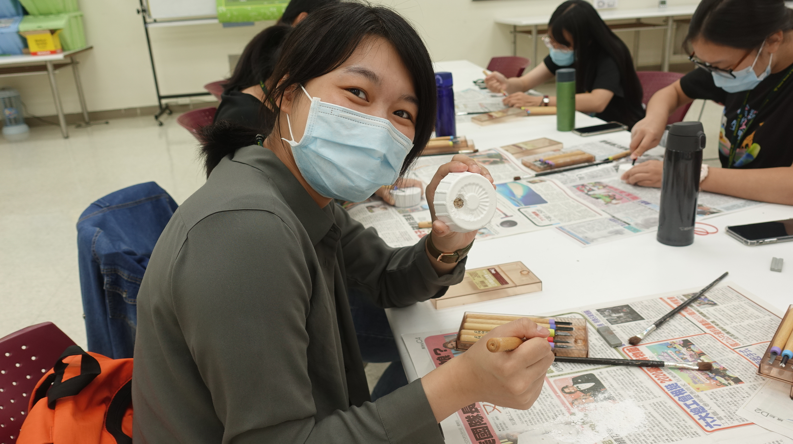
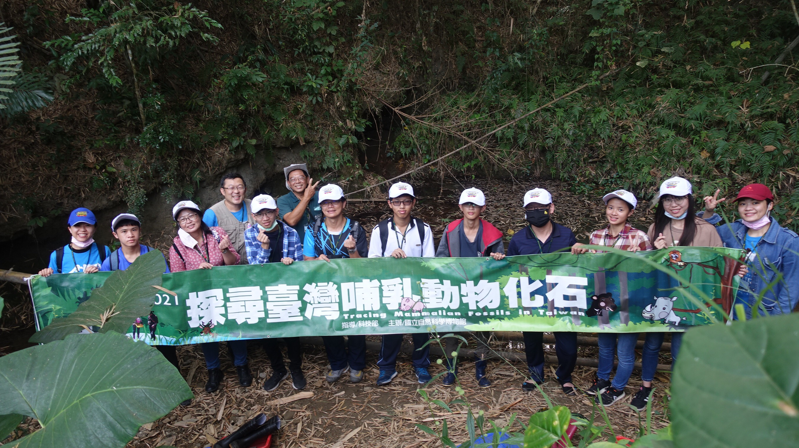
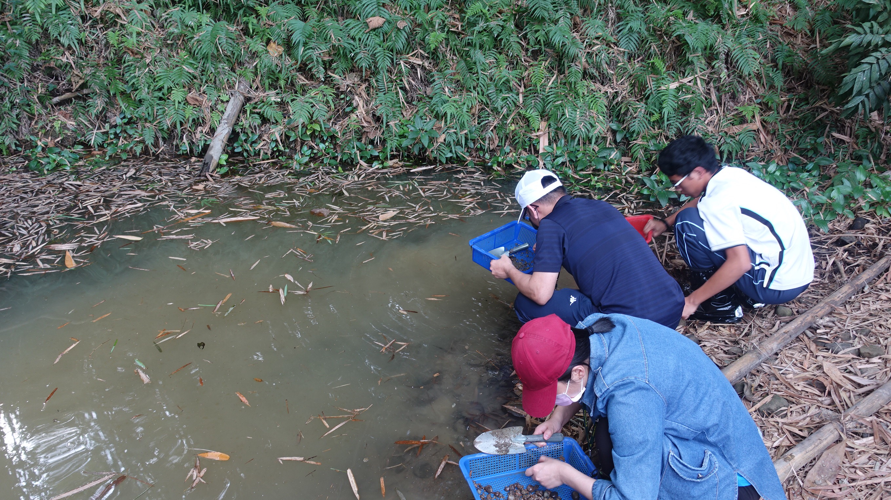
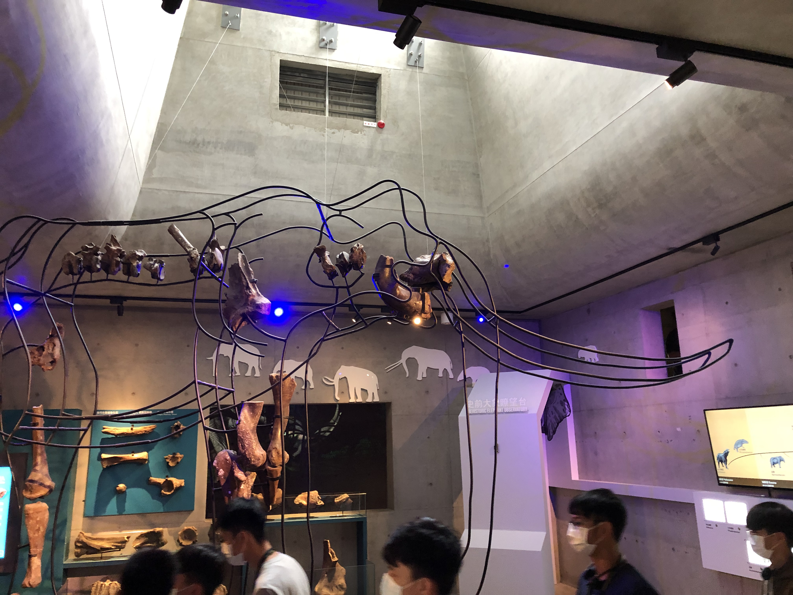
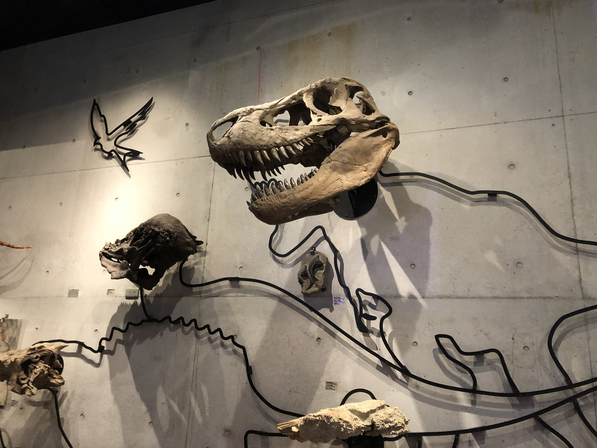

Part-Time Project Assistant (Department of Geology)
Sep. 2019 – Sep. 2021
National Museum of Natural Science

Palaeobiological workshops at Tunghai University (2021)

Tracing Mammalian Fossils in Taiwan Camp (2021)

Finding shark fossils in the Tracing Mammalian Fossils in Taiwan Camp (2021)

Visiting Tainan City Zuojhen Fossil Park in the Tracing Mammalian Fossils in Taiwan Camp (2021)

Visiting Tainan City Zuojhen Fossil Park in the Tracing Mammalian Fossils in Taiwan Camp (2021)
Geological Survey from the Mudstone of the Kuting-Keng Formation during the Late Neogene